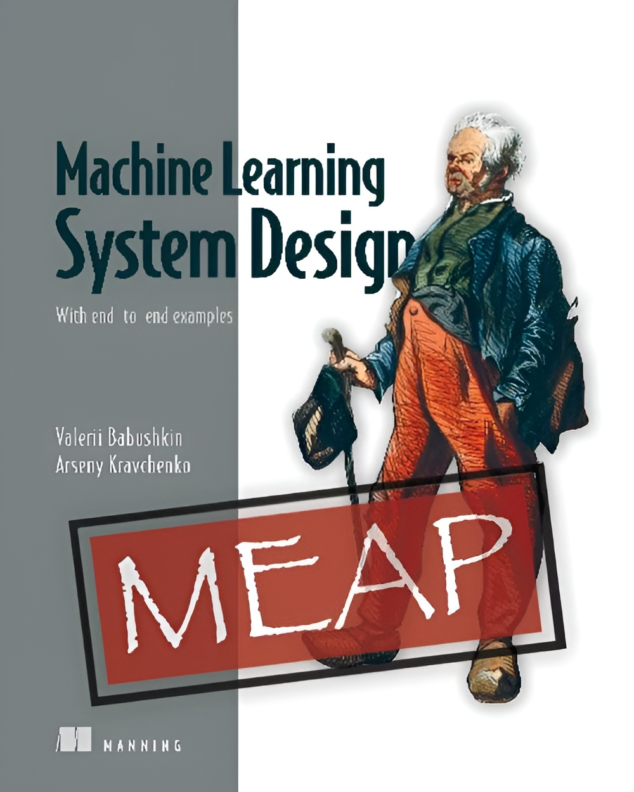
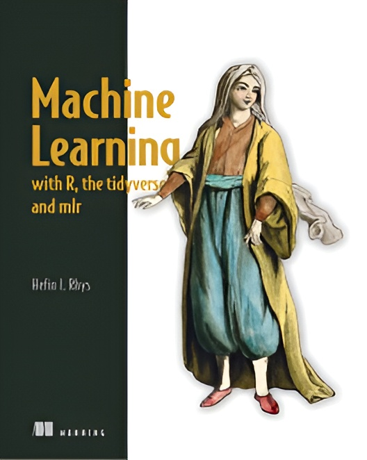

Machine Learning System Design

Το βιβλίο Machine Learning System Design από τις εκδόσεις Manning επικεντρώνεται στον σχεδιασμό και την
ανάπτυξη συστημάτων μηχανικής μάθησης. Παρουσιάζει αρχιτεκτονικές πρακτικές, διαχείριση δεδομένων,
ανάπτυξη μοντέλων και στρατηγικές κλιμάκωσης, βοηθώντας τους επαγγελματίες να εφαρμόσουν ML λύσεις σε
πραγματικά περιβάλλοντα.
- Συγγραφέας/είς: Valerii Babushkin, Arseny Kravchenko
- Εκδότης: Manning
- Σελίδες: 384
- Αξιολόγηση: ★ ★ ★ ★ ☆
- Πλήθος αξιολογήσεων: 9
Περισσότερα για το συγκεκριμένο βιβλίο θα βρείτε ΕΔΩ
Machine Learning with R, the tidyverse, and mlr

Το βιβλίο Machine Learning with R, the tidyverse, and mlr είναι ένας πρακτικός οδηγός για την εφαρμογή
τεχνικών μηχανικής μάθησης με τη χρήση του R Studio και του πακέτου mlr. Εστιάζει στην απλοποίηση της
θεωρίας, αποφεύγοντας την περίπλοκη στατιστική και τα δύσκολα μαθηματικά. Μέσα από ξεκάθαρα διαγράμματα
και κατανοητά παραδείγματα, εξηγεί όλες τις βασικές τεχνικές ML.
Σε κάθε κεφάλαιο, ο αναγνώστης εφαρμόζει έναν νέο αλγόριθμο για την επίλυση ενδιαφέροντων προβλημάτων,
όπως η πρόβλεψη επιβίωσης στον Τιτανικό, η φιλτράρισμα ανεπιθύμητων email και η διερεύνηση
δηλητηριασμένου κρασιού.
- Συγγραφέας/είς: Hefin I. Rhys
- Εκδότης: Manning
- Σελίδες: 536
- Αξιολόγηση: ★ ★ ★ ★ ★
- Πλήθος αξιολογήσεων: 9
Περισσότερα για το συγκεκριμένο βιβλίο θα βρείτε ΕΔΩ
Grokking Machine Learning

Το βιβλίο Grokking Machine Learning παρουσιάζει αλγόριθμους και τεχνικές μηχανικής μάθησης με έναν τρόπο
που μπορεί να κατανοήσει ο καθένας. Αποφεύγει την περίπλοκη ακαδημαϊκή ορολογία και προσφέρει σαφείς
εξηγήσεις που απαιτούν μόνο βασική άλγεβρα. Μέσα από το βιβλίο, θα δημιουργήσεις ενδιαφέροντα έργα με
Python, όπως μοντέλα για ανίχνευση ανεπιθύμητης αλληλογραφίας και αναγνώριση εικόνας. Παράλληλα, θα
αποκτήσεις πρακτικές δεξιότητες για τον καθαρισμό και την προετοιμασία δεδομένων.
- Συγγραφέας/είς: Luis G. Serrano
- Εκδότης: Manning
- Σελίδες: 512
- Αξιολόγηση: ★ ★ ★ ★ ★
- Πλήθος αξιολογήσεων: 25
Περισσότερα για το συγκεκριμένο βιβλίο θα βρείτε ΕΔΩ